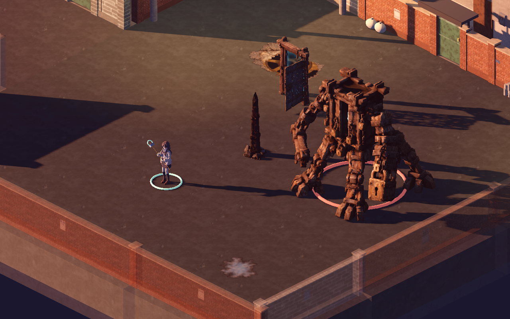
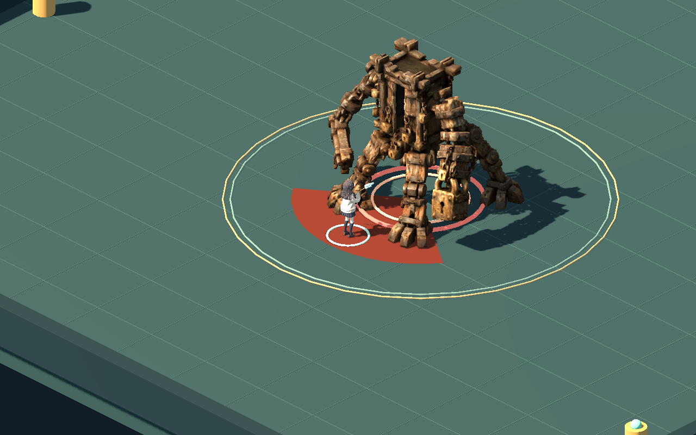
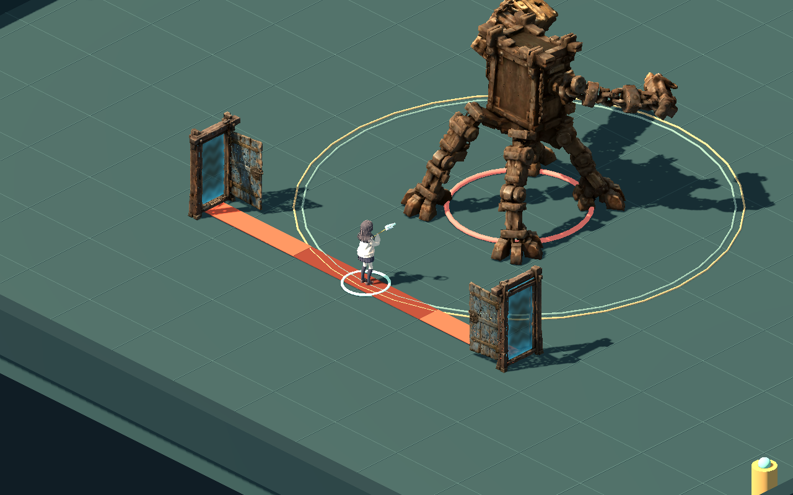
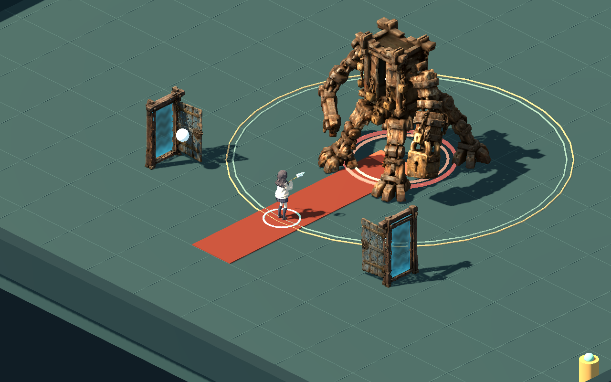

WITCH / BOSS ASSET STUDY 01
덜컥거리는 빗장의 이름
낡은 문틀과 자물쇠로 된 보스, 검은 유인 말뚝, 교차 사격용 문을 Tripo 모델에서 게임 자산으로 만들었습니다.
게임 연결 완료외형 검토 후보1.75배 카메라 기준
문 닫힘 수정: 문짝과 연결 철물의 폭을 문틀에 맞췄습니다. 수정 전후 · 여닫기 비교
실제 표시 크기

실제 골목 C · 1280 × 800 · 카메라 20 / 1.75. 보스는 기존 등급 배율을 적용한 높이 4.48m, 말뚝 2.6m, 문 2.3m입니다. 비교를 위해 보스 정면과 소환 문을 함께 배치했습니다.
실제 전투 연계

시험장 전투를 실제로 진행한 장면입니다. 휩쓸기 판정과 다음 내려찍기 준비가 같은 순간 일어나도 앞 동작의 타격 자세를 표시합니다.
동작 확대 검토
게임에 들어간 모델을 대표 프레임으로 재생합니다. 나무·자물쇠·경첩은 부품별로 움직이며, 보스 사망 시에는 부품이 따로 무너집니다.
문에서 나오는 교차 사격

양옆 문 열림 · 기존 경고 시간 유지
기존 발사 시점에 구체 2발 · 종료 후 문 정리제작 기준
원본 GLB와 분할 원본은 보존했습니다. 보스는 Tripo의 98부품, 문은 60부품 분할을 사용합니다. 보스 가슴의 불씨만 게임 시점에서 잘 보이도록 앞쪽으로 12cm 옮기고 발광 재질을 부여했습니다.
| 자산 | 삼각형 | 강체 부품 | 텍스처·재질 |
|---|
| 빗장 보스 | 27,923 | 98 | 2K · 2재질 |
| 유인 말뚝 | 6,499 | 1 | 1K · 1재질 |
| 교차 사격 문 | 8,962 | 60 | 1K · 1재질 |
잔해는 중력과 바닥 접촉을 미리 구운 연출입니다. 부품끼리·벽과의 실시간 충돌은 포함하지 않습니다. 확대하면 자동 생성 모델의 면과 부품 경계가 거칠 수 있습니다. 이 검토본은 최종 외형·성능 예산 승인과 별개입니다.
검증 범위와 작업 파일
GLB 구조·단일 강체 가중치·텍스처·상수 트랙, Blender 저장본 재열기와 재임포트, Godot에서 36개 기준 자세의 뼈 위치를 확인했습니다. 실제 전투의 4패턴 타격 시점, 연계, 일시정지, 문 정리, 사망 시작 자세·충돌 제거·잔해 정리를 검사했습니다. 기존 보스·맵 이동·전투 자산·소환물 회귀 결과는 아래 매니페스트에 기록합니다.
새 동작은 Blender에서 작성한 시험판용 동작이며 외부 모션 캡처가 아닙니다. 플레이어 v21, 전투 수치, 지도 충돌·내비게이션 데이터는 유지했습니다.